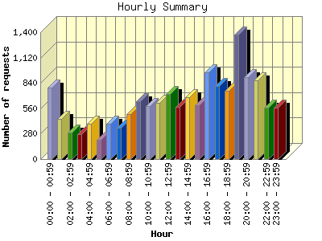
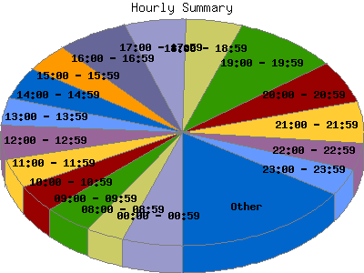

Report generated by Analog 5.91beta1 and Report Magic 2.21
|
Web Server Statistics for "Harish Narayanan (hnarayan) - December 2003" Report generated by Analog 5.91beta1 and Report Magic 2.21 |
The Hourly Summary identifies the level of activity broken down by each hour. Remember that one page hit can result in several server requests as the images for each page are loaded. This summary also compares the level of activity during working hours and after hours as a total for the report time frame.


| Hour | Number of requests | Number of bytes transferred | Percentage of the bytes | Percentage of the requests | |
|---|---|---|---|---|---|
| 1. | 00:00 - 00:59 | 792 | 6.368 MB | 3.06% | 5.34% |
| 2. | 01:00 - 01:59 | 444 | 5.361 MB | 2.58% | 2.99% |
| 3. | 02:00 - 02:59 | 291 | 2.987 MB | 1.44% | 1.96% |
| 4. | 03:00 - 03:59 | 272 | 4.771 MB | 2.30% | 1.83% |
| 5. | 04:00 - 04:59 | 394 | 4.469 MB | 2.15% | 2.66% |
| 6. | 05:00 - 05:59 | 209 | 4.546 MB | 2.19% | 1.41% |
| 7. | 06:00 - 06:59 | 392 | 6.904 MB | 3.32% | 2.64% |
| 8. | 07:00 - 07:59 | 345 | 4.582 MB | 2.21% | 2.33% |
| 9. | 08:00 - 08:59 | 493 | 7.535 MB | 3.63% | 3.32% |
| 10. | 09:00 - 09:59 | 636 | 9.531 MB | 4.59% | 4.29% |
| 11. | 10:00 - 10:59 | 589 | 7.358 MB | 3.54% | 3.97% |
| 12. | 11:00 - 11:59 | 621 | 4.207 MB | 2.02% | 4.18% |
| 13. | 12:00 - 12:59 | 721 | 12.981 MB | 6.25% | 4.86% |
| 14. | 13:00 - 13:59 | 574 | 8.573 MB | 4.13% | 3.87% |
| 15. | 14:00 - 14:59 | 683 | 7.069 MB | 3.40% | 4.60% |
| 16. | 15:00 - 15:59 | 593 | 6.141 MB | 2.96% | 4.00% |
| 17. | 16:00 - 16:59 | 959 | 9.962 MB | 4.80% | 6.46% |
| 18. | 17:00 - 17:59 | 809 | 11.871 MB | 5.71% | 5.45% |
| 19. | 18:00 - 18:59 | 755 | 9.021 MB | 4.34% | 5.09% |
| 20. | 19:00 - 19:59 | 1,371 | 23.841 MB | 11.48% | 9.24% |
| 21. | 20:00 - 20:59 | 900 | 24.947 MB | 12.01% | 6.07% |
| 22. | 21:00 - 21:59 | 866 | 7.649 MB | 3.68% | 5.84% |
| 23. | 22:00 - 22:59 | 565 | 6.139 MB | 2.96% | 3.81% |
| 24. | 23:00 - 23:59 | 563 | 10.916 MB | 5.25% | 3.79% |
| Work Hours (8:00am-4:59pm) | 5,869 | 73.358 MB | 35.31% | 39.56% | |
| After Hours (5:00pm-7:59am) | 8,968 | 134.373 MB | 64.69% | 60.45% | |
This report was generated on January 18, 2004 18:32.
Report time frame December 1, 2003 00:20 to December 31, 2003 23:49.
| Web statistics report produced by: | |
 Analog 5.91beta1 Analog 5.91beta1 |  Report Magic 2.21 Report Magic 2.21 |